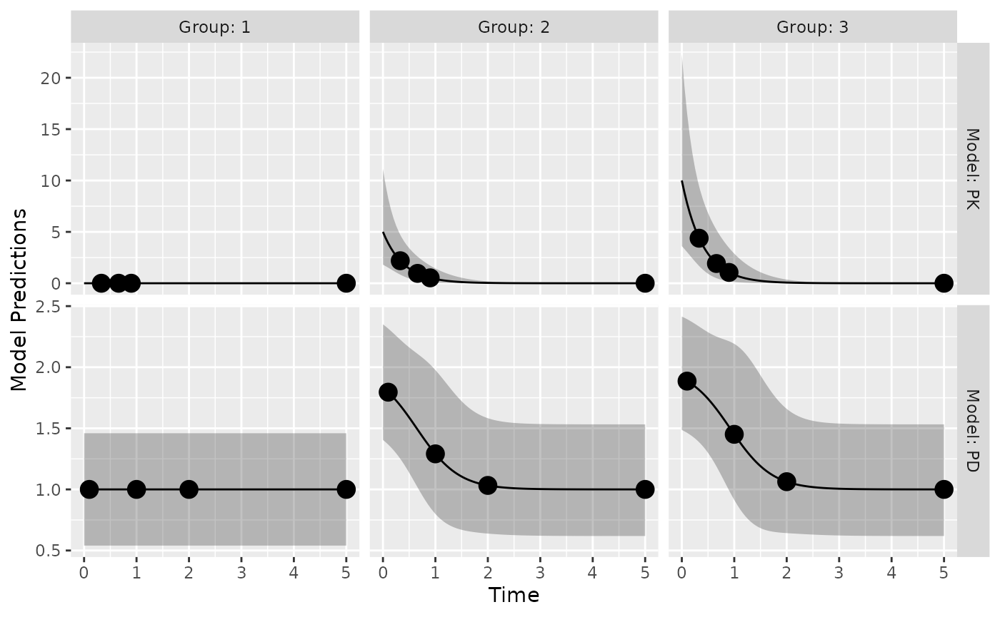
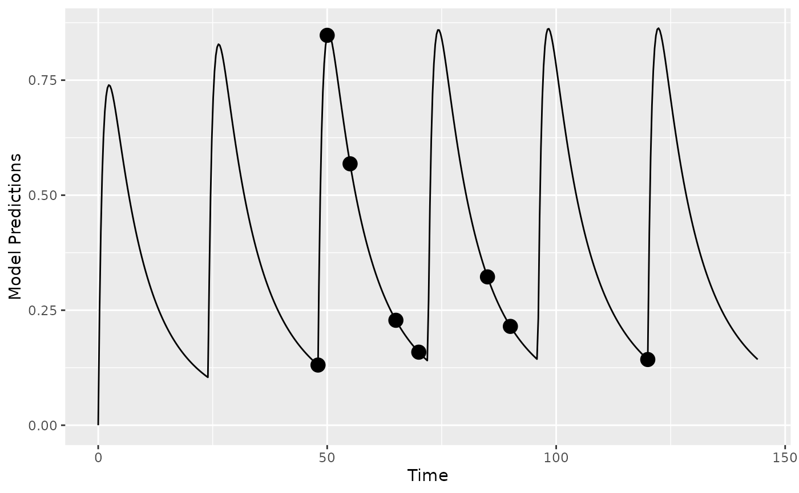
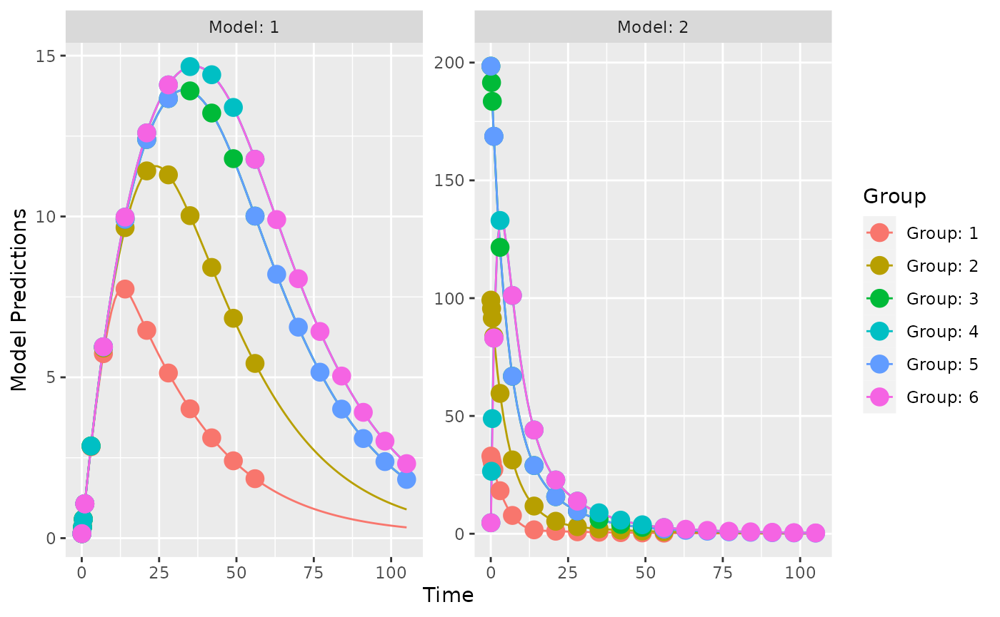
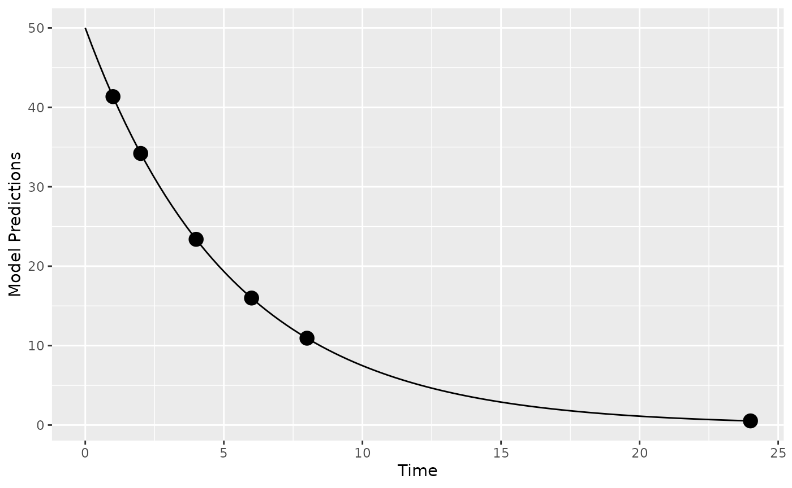
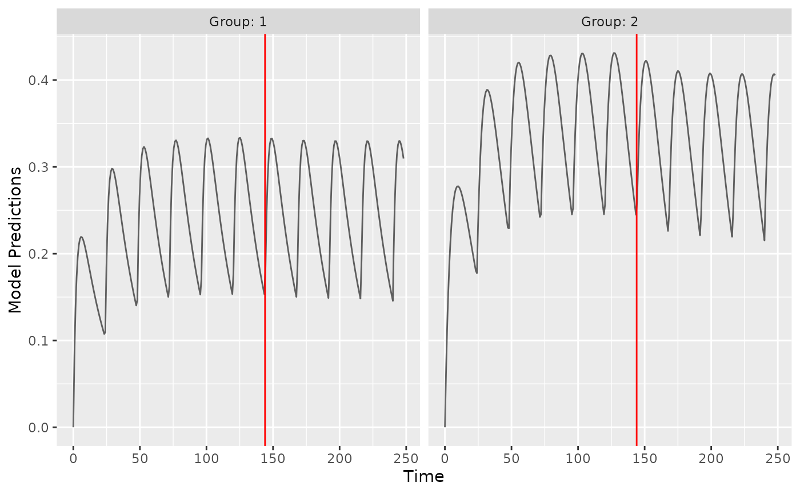
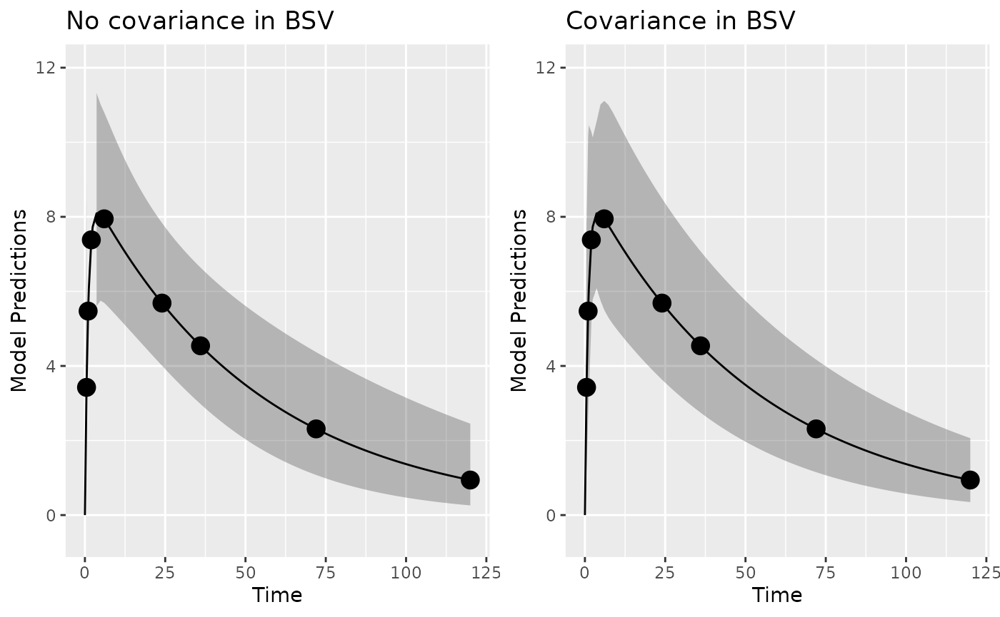
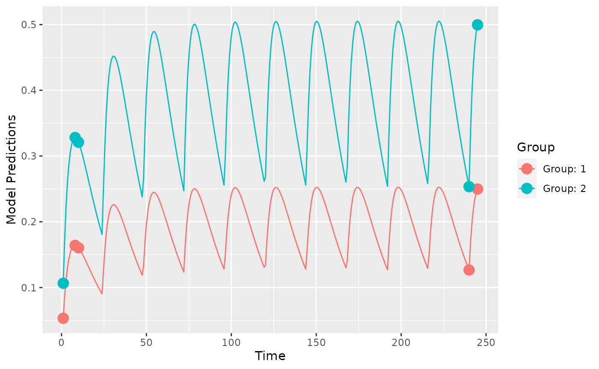
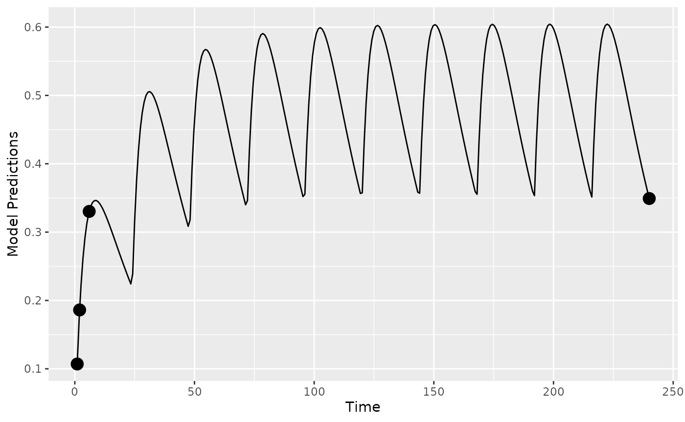
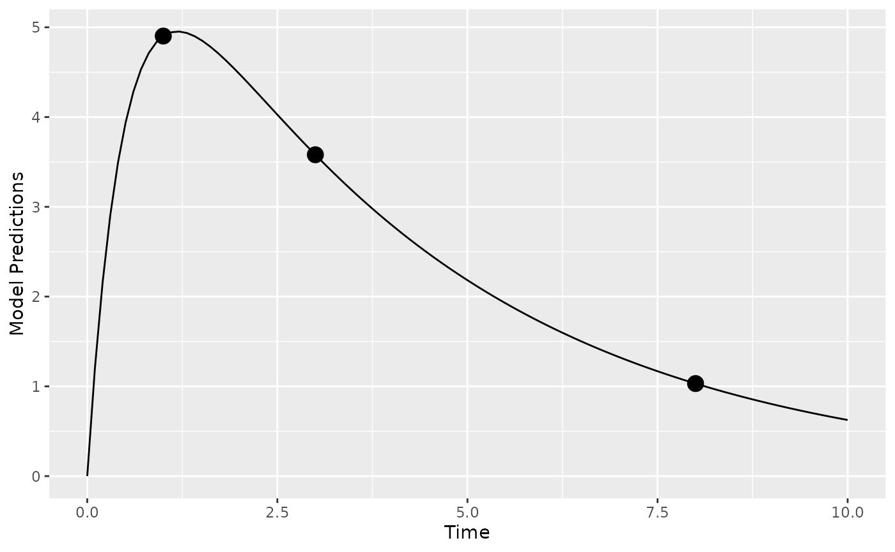

Introduction
In this vignette, we try to highlight PopED features that may be useful. Only code related to specific features we would like to highlight is described here in this vignette. These features (and more) are presented as r-scripts in the “examples” folder in the PopED installation directory. You can view a list of these example files using the commands:
ex_dir <- system.file("examples", package="PopED")
list.files(ex_dir)
#> [1] "ex.1.a.PK.1.comp.oral.md.intro.R"
#> [2] "ex.1.b.PK.1.comp.oral.md.re-parameterize.R"
#> [3] "ex.1.c.PK.1.comp.oral.md.ODE.compiled.R"
#> [4] "ex.10.PKPD.HCV.compiled.R"
#> [5] "ex.11.PK.prior.R"
#> [6] "ex.12.covariate.distributions.R"
#> [7] "ex.13.shrinkage.R"
#> [8] "ex.14.PK.IOV.R"
#> [9] "ex.15.full.covariance.matrix.R"
#> [10] "ex.2.a.warfarin.evaluate.R"
#> [11] "ex.2.b.warfarin.optimize.R"
#> [12] "ex.2.c.warfarin.ODE.compiled.R"
#> [13] "ex.2.d.warfarin.ED.R"
#> [14] "ex.2.e.warfarin.Ds.R"
#> [15] "ex.3.a.PKPD.1.comp.oral.md.imax.D-opt.R"
#> [16] "ex.3.b.PKPD.1.comp.oral.md.imax.ED-opt.R"
#> [17] "ex.4.PKPD.1.comp.emax.R"
#> [18] "ex.5.PD.emax.hill.R"
#> [19] "ex.6.PK.1.comp.oral.sd.R"
#> [20] "ex.7.PK.1.comp.maturation.R"
#> [21] "ex.8.tmdd_qss_one_target_compiled.R"
#> [22] "ex.9.PK.2.comp.oral.md.ode.compiled.R"
#> [23] "HCV_ode.c"
#> [24] "one_comp_oral_CL.c"
#> [25] "tmdd_qss_one_target.c"
#> [26] "two_comp_oral_CL.c"You can then open one of the examples (for example,
ex.1.a.PK.1.comp.oral.md.intro.R) using the following
code
file_name <- "ex.1.a.PK.1.comp.oral.md.intro.R"
ex_file <- system.file("examples",file_name,package="PopED")
file.copy(ex_file,tempdir(),overwrite = T)
file.edit(file.path(tempdir(),file_name))The table below provides a check list of features for each of the 15 available examples.
| Features | Ex1 | Ex2 | Ex3 | Ex4 | Ex5 | Ex6 | Ex7 | Ex8 | Ex9 | Ex10 | Ex11 | Ex12 | Ex13 | Ex14 | Ex15 |
|---|---|---|---|---|---|---|---|---|---|---|---|---|---|---|---|
| Analytic model | X | X | X | X | X | X | X | - | - | - | X | X | X | X | X |
| ODE model | X | X | - | - | - | X | - | X | X | X | - | - | - | - | - |
| Irregular dosing | - | - | - | - | - | - | - | - | - | - | - | - | - | - | - |
| Full cov matrix W | - | - | - | - | - | - | - | - | - | - | - | - | - | - | X |
| Inter-occ variability | - | - | - | - | - | - | - | - | - | - | - | - | - | X | - |
| Discrete covariates | - | - | - | - | - | - | X | - | - | - | X | - | - | - | - |
| Continuous covariates | X | X | X | X | - | X | X | X | X | X | X | X | X | X | X |
| Multiple arms | X | - | X | X | - | - | X | X | - | - | X | X | - | X | - |
| Multi response models | - | - | X | X | - | - | - | X | - | X | - | - | - | - | - |
| Designs differ across responses |
- | - | - | X | - | - | - | X | - | - | - | - | - | - | - |
| Calculate precision of derived parameters |
- | - | - | - | - | - | - | - | - | - | - | - | - | - | - |
| Power calculation | - | - | - | - | - | - | - | - | - | - | X | - | - | - | - |
| Include previous FIM | - | - | - | - | - | - | - | - | - | - | X | - | - | - | - |
| Shrinkage/Bayesian FIM | X | X | X | X | - | - | X | - | - | X | - | - | X | - | - |
| Discrete optimization | X | X | X | - | - | X | - | X | - | - | - | - | - | X | - |
| Optimization of multi-group designs (same response) |
X | - | X | X | - | - | X | X | - | - | - | - | - | X | - |
| Different optimal sampling times between groups |
- | - | - | - | - | - | - | - | - | - | - | - | - | - | - |
| Optimization with constraining sampling times |
X | - | X | - | - | - | - | - | - | - | - | - | - | X | - |
| Optimization of subjects per group |
- | - | - | - | - | - | - | - | - | - | - | - | - | - | - |
Note: All features are available in PopED but some are not demonstrated in the supplied examples.
Analytic solution of PKPD model, multiple study arms
The full code for this example is available in
ex.4.PKPD.1.comp.emax.R.
Here we define a PKPD mode using analytical equations. The PK is a
one compartment model with intravenous bolus administration and linear
elimination. The PD is an ordinary Emax model driven by the PK
concentrations. The expected output of each measurement (PK or PD) is
given in the vector model_switch (see below for
details).
library(PopED)
f_pkpdmodel <- function(model_switch,xt,parameters,poped.db){
with(as.list(parameters),{
y=xt
MS <- model_switch
# PK model
CONC = DOSE/V*exp(-CL/V*xt)
# PD model
EFF = E0 + CONC*EMAX/(EC50 + CONC)
y[MS==1] = CONC[MS==1]
y[MS==2] = EFF[MS==2]
return(list( y= y,poped.db=poped.db))
})
}The error model also has to accommodate both response models.
## -- Residual Error function
## -- Proportional PK + additive PD
f_Err <- function(model_switch,xt,parameters,epsi,poped.db){
returnArgs <- do.call(poped.db$model$ff_pointer,list(model_switch,xt,parameters,poped.db))
y <- returnArgs[[1]]
poped.db <- returnArgs[[2]]
MS <- model_switch
prop.err <- y*(1+epsi[,1])
add.err <- y+epsi[,2]
y[MS==1] = prop.err[MS==1]
y[MS==2] = add.err[MS==2]
return(list( y= y,poped.db =poped.db ))
}In the poped.db object the vector we specify
model_switch in order to assign the sampling times defined
in the vector xt to the PK (=1) or PD (=2) model.
poped.db <- create.poped.database(
# Model
ff_fun=f_pkpdmodel,
fError_fun=f_Err,
fg_fun=f_etaToParam,
sigma=diag(c(0.15,0.015)),
bpop=c(CL=0.5,V=0.2,E0=1,EMAX=1,EC50=1),
d=c(CL=0.09,V=0.09,E0=0.04,EC50=0.09),
# Design
groupsize=20,
m=3,
xt = c(0.33,0.66,0.9,5,0.1,1,2,5),
model_switch=c(1,1,1,1,2,2,2,2),
a=list(c(DOSE=0),c(DOSE=1),c(DOSE=2)),
# Design space
minxt=0,
maxxt=5,
bUseGrouped_xt=1,
maxa=c(DOSE=10),
mina=c(DOSE=0))The model predictions below show typical PK and PD profiles for three
dose groups and the expected 95% prediction interval of the data. The
initial design, as shown in the poped.db object, consists
of 3 arms with doses of 0, 1, and 2 mg; PK sampling times are 0.33,
0.66, 0.9, and 5 hours/days; PD sampling times are 0.1, 1, 2, and 5
hours/days. With model.names=c("PK","PD") one can name the
outputs in the graph.
plot_model_prediction(
poped.db,PI=TRUE,
facet_scales="free",
separate.groups=TRUE,
model.names=c("PK","PD")) 
ODE solution of PK model, multiple dosing
The full code for this example is available in
ex.9.PK.2.comp.oral.md.ode.compiled.R.
In this example, the deSolve library needs to be
installed for computing solutions to a system of differential equations.
For faster solutions one can use pre-compiled code using the
Rcpp library (see below).
Here we define the two compartment model in R using deSolve notation
PK.2.comp.oral.ode <- function(Time, State, Pars){
with(as.list(c(State, Pars)), {
dA1 <- -KA*A1
dA2 <- KA*A1 + A3* Q/V2 -A2*(CL/V1+Q/V1)
dA3 <- A2* Q/V1-A3* Q/V2
return(list(c(dA1, dA2, dA3)))
})
}Now we define the initial conditions of the ODE system
A_ini with a named vector, in this case all compartments
are initialized to zero c(A1=0,A2=0,A3=0). The dosing input
is defined as a data.frame dose_dat referring to the named
compartment var = c("A1"), the specified
dose_times and value=c(DOSE*Favail) dose
amounts. Note that the covariates DOSE and the regimen
TAU can differ by arm and be optimized (as shown in
ex.1.a.PK.1.comp.oral.md.intro.R). For more information see
the help pages for ?deSolve::ode and
?deSolve::events.
ff.PK.2.comp.oral.md.ode <- function(model_switch, xt, parameters, poped.db){
with(as.list(parameters),{
# initial conditions of ODE system
A_ini <- c(A1=0, A2=0, A3=0)
#Set up time points to get ODE solutions
times_xt <- drop(xt) # sample times
times_start <- c(0) # add extra time for start of study
times_dose = seq(from=0,to=max(times_xt),by=TAU) # dose times
times <- unique(sort(c(times_start,times_xt,times_dose))) # combine it all
# Dosing
dose_dat <- data.frame(
var = c("A1"),
time = times_dose,
value = c(DOSE*Favail),
method = c("add")
)
out <- ode(A_ini, times, PK.2.comp.oral.ode, parameters,
events = list(data = dose_dat))#atol=1e-13,rtol=1e-13)
y = out[, "A2"]/V1
y=y[match(times_xt,out[,"time"])]
y=cbind(y)
return(list(y=y,poped.db=poped.db))
})
}When creating a PopED database. ff_fun should point to
the function providing the solution to the ODE. Further, the names in
the parameter definition (fg) function should match the
parameters used in the above two functions.
poped.db <- create.poped.database(
# Model
ff_fun="ff.PK.2.comp.oral.md.ode",
fError_fun="feps.add.prop",
fg_fun="fg",
sigma=c(prop=0.1^2,add=0.05^2),
bpop=c(CL=10,V1=100,KA=1,Q= 3.0, V2= 40.0, Favail=1),
d=c(CL=0.15^2,KA=0.25^2),
notfixed_bpop=c(1,1,1,1,1,0),
# Design
groupsize=20,
m=1, #number of groups
xt=c( 48,50,55,65,70,85,90,120),
# Design space
minxt=0,
maxxt=144,
discrete_xt = list(0:144),
a=c(DOSE=100,TAU=24),
discrete_a = list(DOSE=seq(0,1000,by=100),TAU=8:24))We plot the population prediction of the model for the initial design
plot_model_prediction(poped.db,model_num_points = 500)
Faster computations with Rcpp: We could also define
the system using Rcpp, which will produce compiled code that should run
faster (further examples in
ex.2.c.warfarin.ODE.compiled.R). First we redefine the ODE
system using Rcpp.
library(Rcpp)
cppFunction(
'List two_comp_oral_ode_Rcpp(double Time, NumericVector A, NumericVector Pars) {
int n = A.size();
NumericVector dA(n);
double CL = Pars[0];
double V1 = Pars[1];
double KA = Pars[2];
double Q = Pars[3];
double V2 = Pars[4];
dA[0] = -KA*A[0];
dA[1] = KA*A[0] - (CL/V1)*A[1] - Q/V1*A[1] + Q/V2*A[2];
dA[2] = Q/V1*A[1] - Q/V2*A[2];
return List::create(dA);
}')Next we add the compiled function
(two_comp_oral_ode_Rcpp) in the ODE solver.
ff.PK.2.comp.oral.md.ode.Rcpp <- function(model_switch, xt, parameters, poped.db){
with(as.list(parameters),{
# initial conditions of ODE system
A_ini <- c(A1=0, A2=0, A3=0)
#Set up time points to get ODE solutions
times_xt <- drop(xt) # sample times
times_start <- c(0) # add extra time for start of study
times_dose = seq(from=0,to=max(times_xt),by=TAU) # dose times
times <- unique(sort(c(times_start,times_xt,times_dose))) # combine it all
# Dosing
dose_dat <- data.frame(
var = c("A1"),
time = times_dose,
value = c(DOSE*Favail),
method = c("add")
)
# Here "two_comp_oral_ode_Rcpp" is equivalent
# to the non-compiled version "PK.2.comp.oral.ode".
out <- ode(A_ini, times, two_comp_oral_ode_Rcpp, parameters,
events = list(data = dose_dat))#atol=1e-13,rtol=1e-13)
y = out[, "A2"]/V1
y=y[match(times_xt,out[,"time"])]
y=cbind(y)
return(list(y=y,poped.db=poped.db))
})
}Finally we create a poped database to use these functions by updating the previously created database.
poped.db.Rcpp <- create.poped.database(
poped.db,
ff_fun="ff.PK.2.comp.oral.md.ode.Rcpp")We can compare the time for design evaluation with these two methods of describing the same model.
tic(); eval <- evaluate_design(poped.db); toc()
#> Elapsed time: 2.759 seconds.
tic(); eval <- evaluate_design(poped.db.Rcpp); toc()
#> Elapsed time: 1.318 seconds.The difference is noticeable and gets larger for more complex ODE models.
ODE solution of TMDD model with 2 outputs, Multiple arms, different dose routes, different number of sample times per arm
The full code for this example is available in
ex.8.tmdd_qss_one_target_compiled.R.
In the function that defines the dosing and derives the ODE solution,
the discrete covariate SC_FLAG is used to give the dose
either into A1 or A2, the sub-cutaneous or the
IV compartment.
tmdd_qss_one_target_model_compiled <- function(model_switch,xt,parameters,poped.db){
with(as.list(parameters),{
y=xt
#The initialization vector for the compartment
A_ini <- c(A1=DOSE*SC_FLAG,
A2=DOSE*(1-SC_FLAG),
A3=0,
A4=R0)
#Set up time points for the ODE
times_xt <- drop(xt)
times <- sort(times_xt)
times <- c(0,times) ## add extra time for start of integration
# solve the ODE
out <- ode(A_ini, times, tmdd_qss_one_target_model_ode, parameters)#,atol=1e-13,rtol=1e-13)
# extract the time points of the observations
out = out[match(times_xt,out[,"time"]),]
# Match ODE output to measurements
RTOT = out[,"A4"]
CTOT = out[,"A2"]/V1
CFREE = 0.5*((CTOT-RTOT-KSSS)+sqrt((CTOT-RTOT-KSSS)^2+4*KSSS*CTOT))
COMPLEX=((RTOT*CFREE)/(KSSS+CFREE))
RFREE= RTOT-COMPLEX
y[model_switch==1]= RTOT[model_switch==1]
y[model_switch==2] =CFREE[model_switch==2]
#y[model_switch==3]=RFREE[model_switch==3]
return(list( y=y,poped.db=poped.db))
})
}Two different sub-studies are defined, with different sampling times
per arm - in terms of total number of samples and the actual times1. Due to
this difference in numbers and the relatively complicated study design
we define the sample times (xt), what each sample time will
measure (model_switch) and which samples should be taken at
the same study time (G_xt) as matrices. Here three
variables xt, model_switch, and
G_xt are matrices with each row representing one arm, and
the number of columns is the maximum number of samples (for all
endpoints) in any of the arms (i.e., max(ni)). To be clear
about which elements in the matrices should be considered we specify the
number of samples per arm by defining the vector ni in the
create.poped.database function.
xt <- zeros(6,30)
study_1_xt <- matrix(rep(c(0.0417,0.25,0.5,1,3,7,14,21,28,35,42,49,56),8),nrow=4,byrow=TRUE)
study_2_xt <- matrix(rep(c(0.0417,1,1,7,14,21,28,56,63,70,77,84,91,98,105),4),nrow=2,byrow=TRUE)
xt[1:4,1:26] <- study_1_xt
xt[5:6,] <- study_2_xt
model_switch <- zeros(6,30)
model_switch[1:4,1:13] <- 1
model_switch[1:4,14:26] <- 2
model_switch[5:6,1:15] <- 1
model_switch[5:6,16:30] <- 2
G_xt <- zeros(6,30)
study_1_G_xt <- matrix(rep(c(1:13),8),nrow=4,byrow=TRUE)
study_2_G_xt <- matrix(rep(c(14:28),4),nrow=2,byrow=TRUE)
G_xt[1:4,1:26] <- study_1_G_xt
G_xt[5:6,] <- study_2_G_xtThese can then be plugged into the normal poped.db
setup.
poped.db.2 <- create.poped.database(
# Model
ff_fun=tmdd_qss_one_target_model_compiled,
fError_fun=tmdd_qss_one_target_model_ruv,
fg_fun=sfg,
sigma=c(rtot_add=0.04,cfree_add=0.0225),
bpop=c(CL=0.3,V1=3,Q=0.2,V2=3,FAVAIL=0.7,KA=0.5,VMAX=0,
KMSS=0,R0=0.1,KSSS=0.015,KDEG=10,KINT=0.05),
d=c(CL=0.09,V1=0.09,Q=0.04,V2=0.04,FAVAIL=0.04,
KA=0.16,VMAX=0,KMSS=0,R0=0.09,KSSS=0.09,KDEG=0.04,
KINT=0.04),
notfixed_bpop=c( 1,1,1,1,1,1,0,0,1,1,1,1),
notfixed_d=c( 1,1,1,1,1,1,0,0,1,1,1,1),
# Design
groupsize=rbind(6,6,6,6,100,100),
m=6, #number of groups
xt=xt,
model_switch=model_switch,
ni=rbind(26,26,26,26,30,30),
a=list(c(DOSE=100, SC_FLAG=0),
c(DOSE=300, SC_FLAG=0),
c(DOSE=600, SC_FLAG=0),
c(DOSE=1000, SC_FLAG=1),
c(DOSE=600, SC_FLAG=0),
c(DOSE=1000, SC_FLAG=1)),
# Design space
bUseGrouped_xt=1,
G_xt=G_xt,
discrete_a = list(DOSE=seq(100,1000,by=100),
SC_FLAG=c(0,1)))Now we can plot population predictions for each group and evaluate the design.
plot_model_prediction(poped.db.2,facet_scales="free")
eval_2 <- evaluate_design(poped.db.2)
round(eval_2$rse) # in percent| RSE in % | |
|---|---|
| CL | 2 |
| V1 | 2 |
| Q | 2 |
| V2 | 3 |
| FAVAIL | 3 |
| KA | 5 |
| R0 | 3 |
| KSSS | 3 |
| KDEG | 3 |
| KINT | 2 |
| d_CL | 11 |
| d_V1 | 12 |
| d_Q | 22 |
| d_V2 | 20 |
| d_FAVAIL | 24 |
| d_KA | 19 |
| d_R0 | 12 |
| d_KSSS | 13 |
| d_KDEG | 20 |
| d_KINT | 18 |
| sig_rtot_add | 3 |
| sig_cfree_add | 3 |
Model with continuous covariates
The R code for this example is available in
ex.12.covariate_distributions.R.
Let’s assume that we have a model with a covariate included in the model description. Here we define a one-compartment PK model that uses allometric scaling with a weight effect on both clearance and volume of distribution.
mod_1 <- function(model_switch,xt,parameters,poped.db){
with(as.list(parameters),{
y=xt
CL=CL*(WT/70)^(WT_CL)
V=V*(WT/70)^(WT_V)
DOSE=1000*(WT/70)
y = DOSE/V*exp(-CL/V*xt)
return(list( y= y,poped.db=poped.db))
})
}
par_1 <- function(x,a,bpop,b,bocc){
parameters=c( CL=bpop[1]*exp(b[1]),
V=bpop[2]*exp(b[2]),
WT_CL=bpop[3],
WT_V=bpop[4],
WT=a[1])
return( parameters )
}Now we define a design. In this case one group of individuals, where
we define the individuals’ typical weight as 70 kg
(a=c(WT=70)).
poped_db <-
create.poped.database(
ff_fun=mod_1,
fg_fun=par_1,
fError_fun=feps.add.prop,
groupsize=50,
m=1,
sigma=c(prop=0.015,add=0.0015),
notfixed_sigma = c(1,0),
bpop=c(CL=3.8,V=20,WT_CL=0.75,WT_V=1),
d=c(CL=0.05,V=0.05),
xt=c( 1,2,4,6,8,24),
minxt=0,
maxxt=24,
bUseGrouped_xt=1,
a=c(WT=70)
)We can create a plot of the model prediction for the typical individual
plot_model_prediction(poped_db)
And evaluate the initial design
evaluate_design(poped_db)
#> Problems inverting the matrix. Results could be misleading.
#> Warning: The following parameters are not estimable:
#> WT_CL, WT_V
#> Is the design adequate to estimate all parameters?
#> $ofv
#> [1] -Inf
#>
#> $fim
#> CL V WT_CL WT_V d_CL d_V sig_prop
#> CL 65.8889583 -0.7145374 0 0 0.00000 0.00000 0.000
#> V -0.7145374 2.2798156 0 0 0.00000 0.00000 0.000
#> WT_CL 0.0000000 0.0000000 0 0 0.00000 0.00000 0.000
#> WT_V 0.0000000 0.0000000 0 0 0.00000 0.00000 0.000
#> d_CL 0.0000000 0.0000000 0 0 9052.31524 29.49016 1424.255
#> d_V 0.0000000 0.0000000 0 0 29.49016 8316.09464 2483.900
#> sig_prop 0.0000000 0.0000000 0 0 1424.25450 2483.90024 440009.144
#>
#> $rse
#> CL V WT_CL WT_V d_CL d_V sig_prop
#> 3.247502 3.317107 NA NA 21.026264 21.950179 10.061292From the output produced we see that the covariate parameters can not
be estimated according to this design calculation (RSE of WT_CL and WT_V
are NA). Why is that? Well, the calculation being done is
assuming that every individual in the group has the same covariate (to
speed up the calculation). This is clearly a poor assumption in this
case!
Distribution of covariates: We can improve the
computation by assuming a distribution of the covariate (WT) in the
individuals in the study. We set groupsize=1, the number of
groups to be 50 (m=50) and assume that WT is sampled from a
normal distribution with mean=70 and sd=10
(a=as.list(rnorm(50, mean = 70, sd = 10)).
poped_db_2 <-
create.poped.database(
ff_fun=mod_1,
fg_fun=par_1,
fError_fun=feps.add.prop,
groupsize=1,
m=50,
sigma=c(prop=0.015,add=0.0015),
notfixed_sigma = c(prop=1,add=0),
bpop=c(CL=3.8,V=20,WT_CL=0.75,WT_V=1),
d=c(CL=0.05,V=0.05),
xt=c(1,2,4,6,8,24),
minxt=0,
maxxt=24,
bUseGrouped_xt=1,
a=as.list(rnorm(50, mean = 70, sd = 10))
)
ev <- evaluate_design(poped_db_2)
round(ev$ofv,1)
#> [1] 42.3
round(ev$rse)| RSE in % | |
|---|---|
| CL | 3 |
| V | 3 |
| WT_CL | 28 |
| WT_V | 22 |
| d_CL | 21 |
| d_V | 22 |
| sig_prop | 10 |
Here we see that, given this distribution of weights, the covariate
effect parameters (WT_CL and WT_V) would be
well estimated.
However, we are only looking at one sample of 50 individuals. Maybe a better approach is to look at the distribution of RSEs over a number of experiments given the expected weight distribution.
nsim <- 30
rse_list <- c()
for(i in 1:nsim){
poped_db_tmp <-
create.poped.database(
ff_fun=mod_1,
fg_fun=par_1,
fError_fun=feps.add.prop,
groupsize=1,
m=50,
sigma=c(prop=0.015,add=0.0015),
notfixed_sigma = c(1,0),
bpop=c(CL=3.8,V=20,WT_CL=0.75,WT_V=1),
d=c(CL=0.05,V=0.05),
xt=c( 1,2,4,6,8,24),
minxt=0,
maxxt=24,
bUseGrouped_xt=1,
a=as.list(rnorm(50,mean = 70,sd=10)))
rse_tmp <- evaluate_design(poped_db_tmp)$rse
rse_list <- rbind(rse_list,rse_tmp)
}
(rse_quant <- apply(rse_list,2,quantile))| CL | V | WT_CL | WT_V | d_CL | d_V | sig_prop | |
|---|---|---|---|---|---|---|---|
| 0% | 3.25 | 3.32 | 22.58 | 17.32 | 21.02 | 21.95 | 10.06 |
| 25% | 3.25 | 3.32 | 27.10 | 20.76 | 21.03 | 21.95 | 10.07 |
| 50% | 3.26 | 3.33 | 29.06 | 22.27 | 21.03 | 21.96 | 10.07 |
| 75% | 3.32 | 3.39 | 31.45 | 24.10 | 21.03 | 21.96 | 10.07 |
| 100% | 3.43 | 3.50 | 40.53 | 31.05 | 21.03 | 21.96 | 10.07 |
Note, that the variance of the RSE of the covariate effect is in this case strongly correlated with the variance of the weight distribution (not shown).
Model with discrete covariates
See ex.11.PK.prior.R. This has the covariate
isPediatric to distinguish between adults and pediatrics.
Alternatively, DOSE and TAU in the first
example can be considered as discrete covariates.
Model with Inter-Occasion Variability (IOV)
The full code for this example is available in
ex.14.PK.IOV.R.
The IOV is introduced with bocc[x,y] in the parameter
definition function as a matrix with the first argument x
indicating the index for the IOV variances, and the second argument
y denoting the occasion. This is used in the example to
derive to different clearance values, i.e., CL_OCC_1 and
CL_OCC_2.
sfg <- function(x,a,bpop,b,bocc){
parameters=c( CL_OCC_1=bpop[1]*exp(b[1]+bocc[1,1]),
CL_OCC_2=bpop[1]*exp(b[1]+bocc[1,2]),
V=bpop[2]*exp(b[2]),
KA=bpop[3]*exp(b[3]),
DOSE=a[1],
TAU=a[2])
return( parameters )
}These parameters can now be used in the model function to define the change in parameters between the occasions (here the change occurs with the 7th dose in a one-compartment model with first order absorption).
cppFunction(
'List one_comp_oral_ode(double Time, NumericVector A, NumericVector Pars) {
int n = A.size();
NumericVector dA(n);
double CL_OCC_1 = Pars[0];
double CL_OCC_2 = Pars[1];
double V = Pars[2];
double KA = Pars[3];
double TAU = Pars[4];
double N,CL;
N = floor(Time/TAU)+1;
CL = CL_OCC_1;
if(N>6) CL = CL_OCC_2;
dA[0] = -KA*A[0];
dA[1] = KA*A[0] - (CL/V)*A[1];
return List::create(dA);
}'
)
ff.ode.rcpp <- function(model_switch, xt, parameters, poped.db){
with(as.list(parameters),{
A_ini <- c(A1=0, A2=0)
times_xt <- drop(xt) #xt[,,drop=T]
dose_times = seq(from=0,to=max(times_xt),by=TAU)
eventdat <- data.frame(var = c("A1"),
time = dose_times,
value = c(DOSE), method = c("add"))
times <- sort(c(times_xt,dose_times))
out <- ode(A_ini, times, one_comp_oral_ode, c(CL_OCC_1,CL_OCC_2,V,KA,TAU),
events = list(data = eventdat))#atol=1e-13,rtol=1e-13)
y = out[, "A2"]/(V)
y=y[match(times_xt,out[,"time"])]
y=cbind(y)
return(list(y=y,poped.db=poped.db))
})
}The within-subject variability variances (docc) are
defined in the poped database as a 3-column matrix with one row per
IOV-parameter, and the middle column giving the variance values.
poped.db <-
create.poped.database(
ff_fun=ff.ode.rcpp,
fError_fun=feps.add.prop,
fg_fun=sfg,
bpop=c(CL=3.75,V=72.8,KA=0.25),
d=c(CL=0.25^2,V=0.09,KA=0.09),
sigma=c(prop=0.04,add=5e-6),
notfixed_sigma=c(0,0),
docc = matrix(c(0,0.09,0),nrow = 1),
m=2,
groupsize=20,
xt=c( 1,2,8,240,245),
minxt=c(0,0,0,240,240),
maxxt=c(10,10,10,248,248),
bUseGrouped_xt=1,
a=list(c(DOSE=20,TAU=24),c(DOSE=40, TAU=24)),
maxa=c(DOSE=200,TAU=24),
mina=c(DOSE=0,TAU=24)
)We can visualize the IOV by looking at an example individual. We see the PK profile changes at the 7th dose (red line) due to the change in clearance.
library(ggplot2)
set.seed(123)
plot_model_prediction(
poped.db,
PRED=F,IPRED=F,
separate.groups=T,
model_num_points = 300,
groupsize_sim = 1,
IPRED.lines = T,
alpha.IPRED.lines=0.6,
sample.times = F
) + geom_vline(xintercept = 24*6,color="red")
We can also see that the design is relatively poor for estimating the IOV parameter:
ev <- evaluate_design(poped.db)
round(ev$rse)| RSE in % | |
|---|---|
| CL | 6 |
| V | 9 |
| KA | 11 |
| d_CL | 106 |
| d_V | 43 |
| d_KA | 63 |
| D.occ[1,1] | 79 |
Full omega matrix
The full code for this example is available in
ex.15.full.covariance.matrix.R.
The covd object is used for defining the covariances of
the between subject variances (off-diagonal elements of the full
variance-covariance matrix for the between subject variability).
poped.db_with <-
create.poped.database(
ff_file="ff",
fg_file="sfg",
fError_file="feps",
bpop=c(CL=0.15, V=8, KA=1.0, Favail=1),
notfixed_bpop=c(1,1,1,0),
d=c(CL=0.07, V=0.02, KA=0.6),
covd = c(.03,.1,.09),
sigma=c(prop=0.01),
groupsize=32,
xt=c( 0.5,1,2,6,24,36,72,120),
minxt=0,
maxxt=120,
a=70
)What do the covariances mean?
(IIV <- poped.db_with$parameters$param.pt.val$d)
#> [,1] [,2] [,3]
#> [1,] 0.07 0.03 0.10
#> [2,] 0.03 0.02 0.09
#> [3,] 0.10 0.09 0.60
cov2cor(IIV)
#> [,1] [,2] [,3]
#> [1,] 1.0000000 0.8017837 0.4879500
#> [2,] 0.8017837 1.0000000 0.8215838
#> [3,] 0.4879500 0.8215838 1.0000000They indicate a correlation of the inter-individual variabilities, here of ca. 0.8 between clearance and volume, as well as between volume and absorption rate.
We can clearly see a difference in the variance of the model predictions.
library(ggplot2)
p1 <- plot_model_prediction(poped.db, PI=TRUE)+ylim(-0.5,12)
p2 <- plot_model_prediction(poped.db_with,PI=TRUE) +ylim(-0.5,12)
gridExtra::grid.arrange(p1+ ggtitle("No covariance in BSV"), p2+ ggtitle("Covariance in BSV"), nrow = 1)
Evaluating the designs with and without the covariances:
ev1 <- evaluate_design(poped.db)
ev2 <- evaluate_design(poped.db_with)| Diagonal BSV | Covariance in BSV | |
|---|---|---|
| CL | 5 | 5 |
| V | 3 | 3 |
| KA | 14 | 14 |
| d_CL | 26 | 26 |
| d_V | 30 | 30 |
| d_KA | 26 | 26 |
| sig_prop | 11 | 11 |
| D[2,1] | NA | 31 |
| D[3,1] | NA | 41 |
| D[3,2] | NA | 31 |
Note, that the precision of all other parameters is barely affected by including the full covariance matrix. This is likely to be different in practice with more ill-conditioned numerical problems.
Evaluate the same designs with full FIM (instead of reduced)
ev1 <- evaluate_design(poped.db, fim.calc.type=0)
ev2 <-evaluate_design(poped.db_with, fim.calc.type=0)
round(ev1$rse,1)
round(ev2$rse,1)| Diagonal BSV | Covariance in BSV | |
|---|---|---|
| CL | 4 | 4 |
| V | 3 | 2 |
| KA | 5 | 5 |
| d_CL | 26 | 27 |
| d_V | 31 | 31 |
| d_KA | 27 | 26 |
| sig_prop | 12 | 12 |
| D[2,1] | NA | 31 |
| D[3,1] | NA | 42 |
| D[3,2] | NA | 31 |
Include a prior FIM, compute power to identify a parameter
In this example we incorporate prior knowledge into a current study
design calculation. First the expected FIM obtained from an experiment
in adults is computed. Then this FIM is added to the current experiment
in children. One could also use the observed FIM when using estimation
software to fit one realization of a design (from the $COVARIANCE step
in NONMEM for example). The full code for this example is available in
ex.11.PK.prior.R.
Note that we define the parameters for a one-compartment first-order
absorption model using a covariate called isPediatric to
switch between adult and pediatric models, and
bpop[5]=pedCL is the factor to multiply the adult clearance
bpop[3] to obtain the pediatric one.
sfg <- function(x,a,bpop,b,bocc){
parameters=c(
V=bpop[1]*exp(b[1]),
KA=bpop[2]*exp(b[2]),
CL=bpop[3]*exp(b[3])*bpop[5]^a[3], # add covariate for pediatrics
Favail=bpop[4],
isPediatric = a[3],
DOSE=a[1],
TAU=a[2])
return( parameters )
}The design and design space for adults is defined below (Two arms, 5
sample time points per arm, doses of 20 and 40 mg,
isPediatric = 0). As we want to pool the results (i.e. add
the FIMs together), we also have to provide the pedCL
parameter so that both the adult and children FIMs have the same
dimensions.
poped.db <-
create.poped.database(
ff_fun=ff.PK.1.comp.oral.md.CL,
fg_fun=sfg,
fError_fun=feps.add.prop,
bpop=c(V=72.8,KA=0.25,CL=3.75,Favail=0.9,pedCL=0.8),
notfixed_bpop=c(1,1,1,0,1),
d=c(V=0.09,KA=0.09,CL=0.25^2),
sigma=c(0.04,5e-6),
notfixed_sigma=c(0,0),
m=2,
groupsize=20,
xt=c( 1,8,10,240,245),
bUseGrouped_xt=1,
a=list(c(DOSE=20,TAU=24,isPediatric = 0),
c(DOSE=40, TAU=24,isPediatric = 0))
)Create plot of model without variability
plot_model_prediction(poped.db, model_num_points = 300)
To store the FIM from the adult design we evaluate this design
(outAdult = evaluate_design(poped.db))
#> Problems inverting the matrix. Results could be misleading.
#> Warning: The following parameters are not estimable:
#> pedCL
#> Is the design adequate to estimate all parameters?
#> $ofv
#> [1] -Inf
#>
#> $fim
#> V KA CL pedCL d_V d_KA
#> V 0.05854391 -6.815269 -0.01531146 0 0.0000000 0.00000000
#> KA -6.81526942 2963.426688 -1.32113719 0 0.0000000 0.00000000
#> CL -0.01531146 -1.321137 37.50597895 0 0.0000000 0.00000000
#> pedCL 0.00000000 0.000000 0.00000000 0 0.0000000 0.00000000
#> d_V 0.00000000 0.000000 0.00000000 0 1203.3695137 192.31775149
#> d_KA 0.00000000 0.000000 0.00000000 0 192.3177515 428.81459138
#> d_CL 0.00000000 0.000000 0.00000000 0 0.2184104 0.01919009
#> d_CL
#> V 0.000000e+00
#> KA 0.000000e+00
#> CL 0.000000e+00
#> pedCL 0.000000e+00
#> d_V 2.184104e-01
#> d_KA 1.919009e-02
#> d_CL 3.477252e+03
#>
#> $rse
#> V KA CL pedCL d_V d_KA d_CL
#> 6.634931 8.587203 4.354792 NA 33.243601 55.689432 27.133255It is obvious that we cannot estimate the pediatric covariate from
adult data only; hence the warning message. You can also note the zeros
in the 4th column and 4th row of the FIM indicating that
pedCL cannot be estimated from the adult data.
We can evaluate the adult design without warning, by setting the
pedCL parameter to be fixed (i.e., not estimated):
evaluate_design(create.poped.database(poped.db, notfixed_bpop=c(1,1,1,0,0)))
#> $ofv
#> [1] 29.70233
#>
#> $fim
#> V KA CL d_V d_KA d_CL
#> V 0.05854391 -6.815269 -0.01531146 0.0000000 0.00000000 0.000000e+00
#> KA -6.81526942 2963.426688 -1.32113719 0.0000000 0.00000000 0.000000e+00
#> CL -0.01531146 -1.321137 37.50597895 0.0000000 0.00000000 0.000000e+00
#> d_V 0.00000000 0.000000 0.00000000 1203.3695137 192.31775149 2.184104e-01
#> d_KA 0.00000000 0.000000 0.00000000 192.3177515 428.81459138 1.919009e-02
#> d_CL 0.00000000 0.000000 0.00000000 0.2184104 0.01919009 3.477252e+03
#>
#> $rse
#> V KA CL d_V d_KA d_CL
#> 6.634931 8.587203 4.354792 33.243601 55.689432 27.133255One obtains good estimates for all parameters for adults (<60% RSE for all).
For pediatrics the covariate isPediatric = 1. We define
one arm, 4 sample-time points.
poped.db.ped <-
create.poped.database(
ff_fun=ff.PK.1.comp.oral.md.CL,
fg_fun=sfg,
fError_fun=feps.add.prop,
bpop=c(V=72.8,KA=0.25,CL=3.75,Favail=0.9,pedCL=0.8),
notfixed_bpop=c(1,1,1,0,1),
d=c(V=0.09,KA=0.09,CL=0.25^2),
sigma=c(0.04,5e-6),
notfixed_sigma=c(0,0),
m=1,
groupsize=6,
xt=c( 1,2,6,240),
bUseGrouped_xt=1,
a=list(c(DOSE=40,TAU=24,isPediatric = 1))
)We can create a plot of the pediatric model without variability
plot_model_prediction(poped.db.ped, model_num_points = 300)
Evaluate the design of the pediatrics study alone.
evaluate_design(poped.db.ped)
#> $ofv
#> [1] -15.2274
#>
#> $fim
#> V KA CL pedCL d_V d_KA
#> V 0.007766643 -1.395981 -0.01126202 -0.05279073 0.0000000 0.0000000
#> KA -1.395980934 422.458209 -2.14666933 -10.06251250 0.0000000 0.0000000
#> CL -0.011262023 -2.146669 5.09936874 23.90329099 0.0000000 0.0000000
#> pedCL -0.052790734 -10.062512 23.90329099 112.04667652 0.0000000 0.0000000
#> d_V 0.000000000 0.000000 0.00000000 0.00000000 141.1922923 53.7923483
#> d_KA 0.000000000 0.000000 0.00000000 0.00000000 53.7923483 58.0960085
#> d_CL 0.000000000 0.000000 0.00000000 0.00000000 0.7877291 0.3375139
#> d_CL
#> V 0.0000000
#> KA 0.0000000
#> CL 0.0000000
#> pedCL 0.0000000
#> d_V 0.7877291
#> d_KA 0.3375139
#> d_CL 428.5254900
#>
#> $rse
#> V KA CL pedCL d_V d_KA
#> 2.472122e+01 3.084970e+01 7.414552e+08 7.414552e+08 1.162309e+02 1.811978e+02
#> d_CL
#> 7.729188e+01Clearly the design has problems on its own.
We can add the prior information from the adult study and evaluate that design (i.e., pooling adult and pediatric data).
poped.db.all <- create.poped.database(
poped.db.ped,
prior_fim = outAdult$fim
)
(out.all <- evaluate_design(poped.db.all))
#> $ofv
#> [1] 34.96368
#>
#> $fim
#> V KA CL pedCL d_V d_KA
#> V 0.007766643 -1.395981 -0.01126202 -0.05279073 0.0000000 0.0000000
#> KA -1.395980934 422.458209 -2.14666933 -10.06251250 0.0000000 0.0000000
#> CL -0.011262023 -2.146669 5.09936874 23.90329099 0.0000000 0.0000000
#> pedCL -0.052790734 -10.062512 23.90329099 112.04667652 0.0000000 0.0000000
#> d_V 0.000000000 0.000000 0.00000000 0.00000000 141.1922923 53.7923483
#> d_KA 0.000000000 0.000000 0.00000000 0.00000000 53.7923483 58.0960085
#> d_CL 0.000000000 0.000000 0.00000000 0.00000000 0.7877291 0.3375139
#> d_CL
#> V 0.0000000
#> KA 0.0000000
#> CL 0.0000000
#> pedCL 0.0000000
#> d_V 0.7877291
#> d_KA 0.3375139
#> d_CL 428.5254900
#>
#> $rse
#> V KA CL pedCL d_V d_KA d_CL
#> 6.381388 8.222819 4.354761 12.591940 31.808871 52.858399 25.601551The pooled data leads to much higher precision in parameter estimates compared to either study separately.
One can also obtain the power for estimating the pediatric difference in clearance (power in estimating bpop[5] as different from 1).
evaluate_power(poped.db.all, bpop_idx=5, h0=1, out=out.all)
#> $ofv
#> [1] 34.96368
#>
#> $fim
#> V KA CL pedCL d_V d_KA
#> V 0.007766643 -1.395981 -0.01126202 -0.05279073 0.0000000 0.0000000
#> KA -1.395980934 422.458209 -2.14666933 -10.06251250 0.0000000 0.0000000
#> CL -0.011262023 -2.146669 5.09936874 23.90329099 0.0000000 0.0000000
#> pedCL -0.052790734 -10.062512 23.90329099 112.04667652 0.0000000 0.0000000
#> d_V 0.000000000 0.000000 0.00000000 0.00000000 141.1922923 53.7923483
#> d_KA 0.000000000 0.000000 0.00000000 0.00000000 53.7923483 58.0960085
#> d_CL 0.000000000 0.000000 0.00000000 0.00000000 0.7877291 0.3375139
#> d_CL
#> V 0.0000000
#> KA 0.0000000
#> CL 0.0000000
#> pedCL 0.0000000
#> d_V 0.7877291
#> d_KA 0.3375139
#> d_CL 428.5254900
#>
#> $rse
#> V KA CL pedCL d_V d_KA d_CL
#> 6.381388 8.222819 4.354761 12.591940 31.808871 52.858399 25.601551
#>
#> $power
#> Value RSE power_pred power_want need_rse min_N_tot
#> pedCL 0.8 12.59194 51.01851 80 8.923519 14We see that to clearly distinguish this parameter one would need 14 children in the pediatric study (for 80% power at \(\alpha=0.05\)).
Design evaluation including uncertainty in the model parameters (robust design)
In this example the aim is to evaluate a design incorporating
uncertainty around parameter values in the model. The full code for this
example is available in ex.2.d.warfarin.ED.R. This
illustration is one of the Warfarin examples from software comparison
in: Nyberg et al.2.
We define the fixed effects in the model and add a 10% uncertainty to
all but Favail. To do this we use a
Matrix defining the fixed effects, per row (row number =
parameter_number) we should have:
- column 1 the type of the distribution for E-family designs (0 = Fixed, 1 = Normal, 2 = Uniform, 3 = User Defined Distribution, 4 = lognormal and 5 = truncated normal)
- column 2 defines the mean.
- column 3 defines the variance of the distribution (or length of uniform distribution).
Here we define a log-normal distribution
bpop_vals <- c(CL=0.15, V=8, KA=1.0, Favail=1)
bpop_vals_ed <-
cbind(ones(length(bpop_vals),1)*4, # log-normal distribution
bpop_vals,
ones(length(bpop_vals),1)*(bpop_vals*0.1)^2) # 10% of bpop value
bpop_vals_ed["Favail",] <- c(0,1,0)
bpop_vals_ed
#> bpop_vals
#> CL 4 0.15 0.000225
#> V 4 8.00 0.640000
#> KA 4 1.00 0.010000
#> Favail 0 1.00 0.000000With this model and parameter set we define the initial design and
design space. Specifically note the bpop=bpop_vals_ed and
the ED_samp_size=20 arguments. ED_samp_size=20
indicates the number of samples used in evaluating the E-family
objective functions.
poped.db <-
create.poped.database(
ff_fun=ff,
fg_fun=sfg,
fError_fun=feps.add.prop,
bpop=bpop_vals_ed,
notfixed_bpop=c(1,1,1,0),
d=c(CL=0.07, V=0.02, KA=0.6),
sigma=c(0.01,0.25),
groupsize=32,
xt=c( 0.5,1,2,6,24,36,72,120),
minxt=0,
maxxt=120,
a=70,
mina=0,
maxa=100,
ED_samp_size=20)You can also provide ED_samp_size argument to the design
evaluation or optimization arguments:
tic();evaluate_design(poped.db,d_switch=FALSE,ED_samp_size=20); toc()
#> $ofv
#> [1] 55.41311
#>
#> $fim
#> CL V KA d_CL d_V d_KA
#> CL 17590.84071 21.130793 10.320177 0.000000e+00 0.00000 0.00000000
#> V 21.13079 17.817120 -3.529007 0.000000e+00 0.00000 0.00000000
#> KA 10.32018 -3.529007 51.622520 0.000000e+00 0.00000 0.00000000
#> d_CL 0.00000 0.000000 0.000000 2.319890e+03 10.62595 0.03827253
#> d_V 0.00000 0.000000 0.000000 1.062595e+01 19005.72029 11.80346662
#> d_KA 0.00000 0.000000 0.000000 3.827253e-02 11.80347 38.83793850
#> SIGMA[1,1] 0.00000 0.000000 0.000000 7.336186e+02 9690.93156 64.79341332
#> SIGMA[2,2] 0.00000 0.000000 0.000000 9.057819e+01 265.70389 2.95284399
#> SIGMA[1,1] SIGMA[2,2]
#> CL 0.00000 0.000000
#> V 0.00000 0.000000
#> KA 0.00000 0.000000
#> d_CL 733.61860 90.578191
#> d_V 9690.93156 265.703890
#> d_KA 64.79341 2.952844
#> SIGMA[1,1] 193719.81023 6622.636801
#> SIGMA[2,2] 6622.63680 477.649386
#>
#> $rse
#> CL V KA d_CL d_V d_KA SIGMA[1,1]
#> 5.030673 2.983917 14.014958 29.787587 36.758952 26.753311 31.645011
#> SIGMA[2,2]
#> 25.341368
#> Elapsed time: 0.142 seconds.We can see that the result, based on MC sampling, is somewhat variable with so few samples.
tic();evaluate_design(poped.db,d_switch=FALSE,ED_samp_size=20); toc()
#> $ofv
#> [1] 55.42045
#>
#> $fim
#> CL V KA d_CL d_V d_KA
#> CL 17652.97859 20.900077 10.206898 0.000000e+00 0.00000 0.00000000
#> V 20.90008 17.846603 -3.482767 0.000000e+00 0.00000 0.00000000
#> KA 10.20690 -3.482767 51.214965 0.000000e+00 0.00000 0.00000000
#> d_CL 0.00000 0.000000 0.000000 2.323385e+03 10.26722 0.03682497
#> d_V 0.00000 0.000000 0.000000 1.026722e+01 19067.54099 11.76757081
#> d_KA 0.00000 0.000000 0.000000 3.682497e-02 11.76757 38.83554961
#> SIGMA[1,1] 0.00000 0.000000 0.000000 7.287665e+02 9671.83881 65.02022679
#> SIGMA[2,2] 0.00000 0.000000 0.000000 9.042351e+01 265.46887 2.94967457
#> SIGMA[1,1] SIGMA[2,2]
#> CL 0.00000 0.000000
#> V 0.00000 0.000000
#> KA 0.00000 0.000000
#> d_CL 728.76653 90.423509
#> d_V 9671.83881 265.468868
#> d_KA 65.02023 2.949675
#> SIGMA[1,1] 194823.12196 6613.513007
#> SIGMA[2,2] 6613.51301 476.316709
#>
#> $rse
#> CL V KA d_CL d_V d_KA SIGMA[1,1]
#> 5.021700 2.980981 14.068646 29.765030 36.691675 26.754137 31.469425
#> SIGMA[2,2]
#> 25.311870
#> Elapsed time: 0.135 seconds.Design evaluation for a subset of model parameters of interest (Ds optimality)
Ds-optimality is a criterion that can be used if one is interested in
estimating a subset “s” of the model parameters as precisely as
possible. The full code for this example is available in
ex.2.e.warfarin.Ds.R. First we define initial design and
design space:
For Ds optimality we add the ds_index option to the
create.poped.database function to indicate whether a
parameter is interesting (=0) or not (=1). Moreover, we set the
ofv_calc_type=6 for computing the Ds optimality criterion
(it is set to 4 by default, for computing the log of the determinant of
the FIM). More details are available by running the command
?create.poped.database.
poped.db <-
create.poped.database(
ff_fun=ff,
fg_fun=sfg,
fError_fun=feps.add.prop,
bpop=c(CL=0.15, V=8, KA=1.0, Favail=1),
notfixed_bpop=c(1,1,1,0),
d=c(CL=0.07, V=0.02, KA=0.6),
sigma=c(0.01,0.25),
groupsize=32,
xt=c( 0.5,1,2,6,24,36,72,120),
minxt=0,
maxxt=120,
a=70,
mina=0,
maxa=100,
ds_index=c(0,0,0,1,1,1,1,1), # size is number_of_non_fixed_parameters
ofv_calc_type=6) # Ds OFV calculationDesign evaluation:
evaluate_design(poped.db)
#> $ofv
#> [1] 16.49204
#>
#> $fim
#> CL V KA d_CL d_V
#> CL 17141.83891 20.838375 10.011000 0.000000e+00 0.000000
#> V 20.83837 17.268051 -3.423641 0.000000e+00 0.000000
#> KA 10.01100 -3.423641 49.864697 0.000000e+00 0.000000
#> d_CL 0.00000 0.000000 0.000000 2.324341e+03 9.770352
#> d_V 0.00000 0.000000 0.000000 9.770352e+00 19083.877564
#> d_KA 0.00000 0.000000 0.000000 3.523364e-02 11.721317
#> SIGMA[1,1] 0.00000 0.000000 0.000000 7.268410e+02 9656.158553
#> SIGMA[2,2] 0.00000 0.000000 0.000000 9.062739e+01 266.487127
#> d_KA SIGMA[1,1] SIGMA[2,2]
#> CL 0.00000000 0.00000 0.000000
#> V 0.00000000 0.00000 0.000000
#> KA 0.00000000 0.00000 0.000000
#> d_CL 0.03523364 726.84097 90.627386
#> d_V 11.72131703 9656.15855 266.487127
#> d_KA 38.85137516 64.78096 2.947285
#> SIGMA[1,1] 64.78095548 192840.20092 6659.569867
#> SIGMA[2,2] 2.94728469 6659.56987 475.500111
#>
#> $rse
#> CL V KA d_CL d_V d_KA SIGMA[1,1]
#> 5.096246 3.031164 14.260384 29.761226 36.681388 26.748640 32.011719
#> SIGMA[2,2]
#> 25.637971Shrinkage
The full code for this example is available in “ex.13.shrinkage.R”.

To evaluate the estimation quality of the individual random effects
in the model (the b’s) we use the function shrinkage().
shrinkage(poped.db)
#> # A tibble: 3 × 5
#> d_KA d_V `D[3,3]` type group
#> <dbl> <dbl> <dbl> <chr> <chr>
#> 1 0.504 0.367 0.424 shrink_var grp_1
#> 2 0.295 0.205 0.241 shrink_sd grp_1
#> 3 0.710 0.303 0.206 se grp_1The output shows us the expected shrinkage on the variance scale (\(shrink_{var}=1-var(b_j)/D(j,j)\)) and on the standard deviation scale (\(shrink_{sd}=1-sd(b_j)/sqrt(D(j,j))\)), as well as the standard errors of the \(b_j\) estimates.
Further examples
Available in PopED, but not shown in examples:
- Espresso design
- Handling BLQ data
- Irregular dosing more complex: e.g. switching between s.c. and i.v. within one arm.
- Constraining the optimization to different allowed sampling times
for each group
- Constraining the optimization to different allowed sampling times for each response
- Keep some sampling time fixed (they will be automatically part of
the optimal design protocol)
- Handling derived outputs
To be implemented:
- Symbolic differentiation